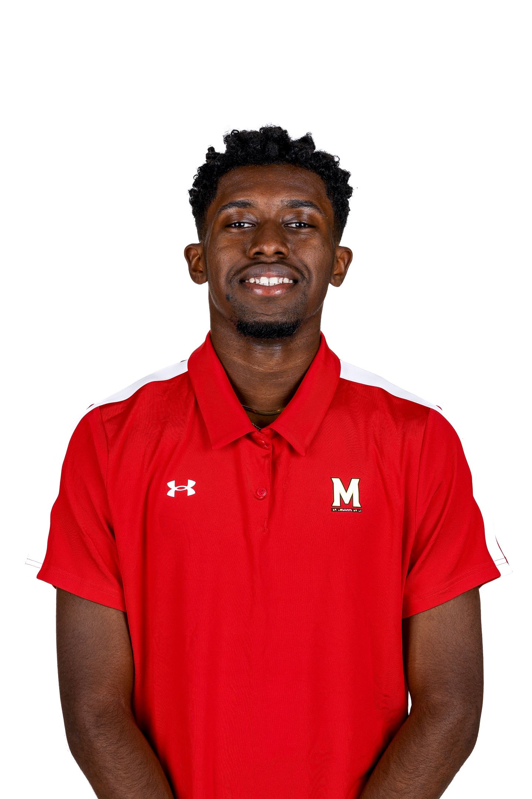
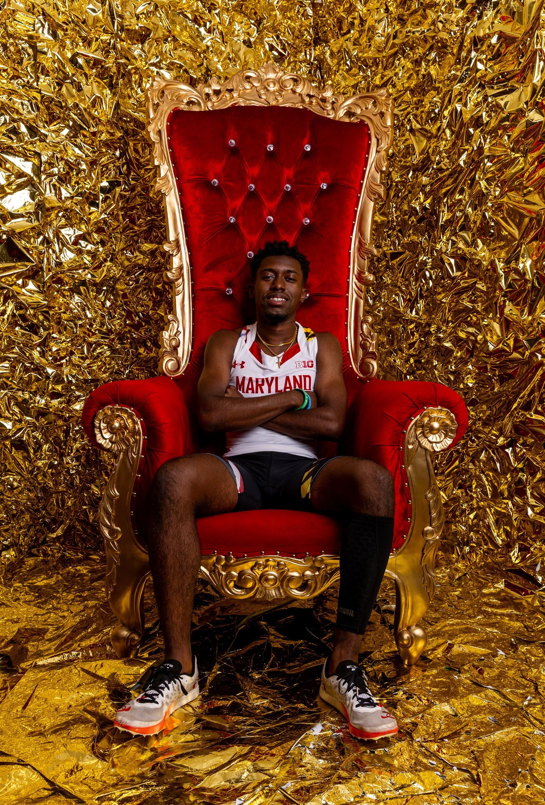

Resume

Education
University of Maryland, College Park
Bachelor of Arts in Journalism, expected May 2027
Relevant coursework: Investigative journalism, multimedia reporting, media ethics, data reporting
Publications
The Black Explosion
View published work
The Precedent
- “New Faces on the Field,” August 2022
- “Winning Is More Than Playing a Game,” August 2022
- “Junior Shines During Track and Field, Brings Home Silver,” September 2022
- “Chas Howard Turns Pandemic Hobby Into a Career,” September 2022
- “Is Marvel Still Worth It?” September 2022
- “Boys Basketball Dominating the Start of the Season,” December 2022
Relevant Skills
- Writing and Editing: AP style, editorial writing, investigative journalism
- Data Coding: Experience with RStudio
- Multimedia: Video production, photography, audio editing
- Digital Tools: Adobe Premiere, Canva
Athletics
University of Maryland Track and Field
Division I student-athlete, August 2023–present
- Collaborate with teammates from diverse backgrounds to achieve shared goals
- Balance academic and athletic responsibilities through strong time management
- Perform under pressure with focus and discipline
Leadership and Volunteer Experience
CBS Sports Media Immersion Program
Participant, February 2026
- Gained hands-on experience in live sports broadcasting and media operations
- Observed production during a Division I men’s basketball game
- Worked alongside professionals in broadcast and game-day operations
University of Maryland Athletics
- Terps Giving (October 2023, 2024): Donated food to campus and local pantries
- Adopt-a-Family (December 2023, 2024): Provided holiday gifts for families in need